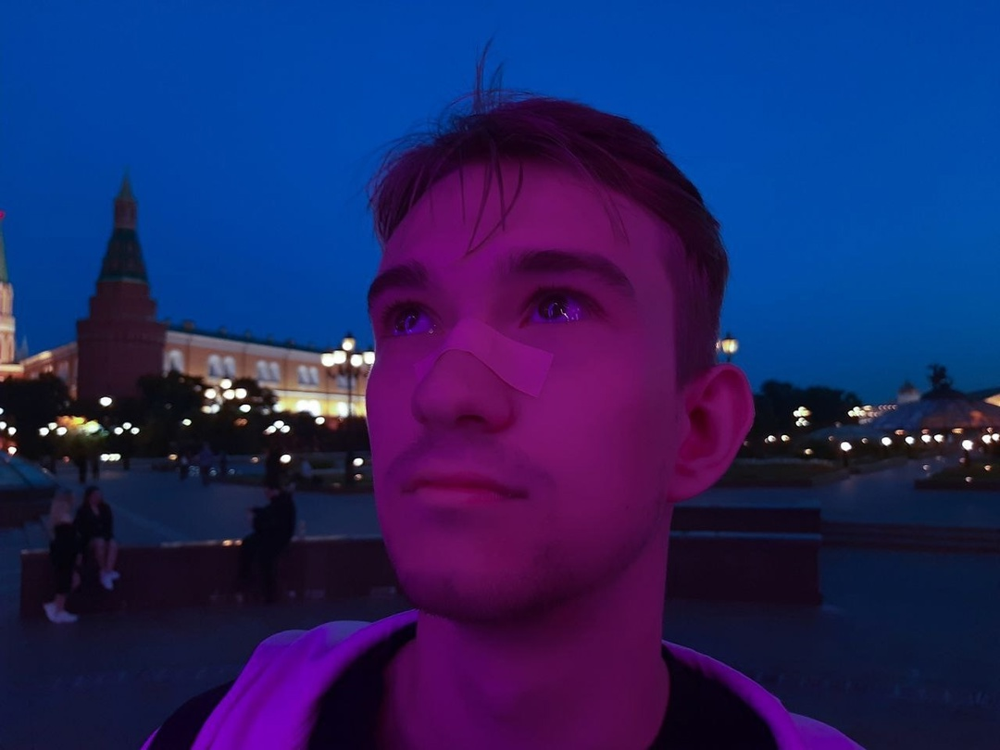

Отчёт
Обо мне
Меня зовут Панарин Илья. Живу в Новосибирске — городе, где лед и мрак сливаются в единое целое.
Не особо люблю фронтенд, но люблю бекенд, так для меня он легче.
Образование
Учусь в НГТУ на направлении прикладная математика и информатика. Мир чисел и алгоритмов — это бесконечный поток, который затягивает и не отпускает.
Интересы
Временами порешиваю литкод, но денег мне за алгоритмы никто не платит, а платят - за постоянное таскание JSONчиков
Гитхаб

ВК